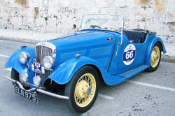

Pre-modification of noun phrases
There is a guide to noun modification in general on this site which you may also like to consult. Here we are concerned only with pre-modification of noun phrases.
Pre-modifying noun phrases is a concise and stylistically sophisticated way to add information because:
- pre-modifiers use fewer words to convey the same information
as longer and more complex relative clauses. Compare,
e.g.:
The people who arrived late
with
The late arrivals - pre-modifying adjectives and classifiers are also concise
ways of delivering information. Compare, e.g.:
The woman with the red hair
with
The red-haired woman
and
The shop on the corner
with
The corner shop
There are a number of ways we can pre-modify the noun phrase in English.
Pre-modifying adjectives |
Most students of English will be happy with this, the easiest form: pre-modification with adjectives. There are, however, some issues. As our examples, we'll use:
- the delicious meal
- the vicious dog
- the ugly building
It is straightforward enough to see that all these are attributive adjective use and could be rearranged to use the adjective predicatively (i.e., as a post-modifier) so we can get:
- the meal was delicious
- the dog is vicious
- the building is ugly
If you have followed the guide to adjectives (linked in the list of related guides at the end), you'll know that most (but not all) adjectives can be used in both ways. Now try to use the following predicative adjectives attributively to pre-modify the noun and you'll discover the problem. Click here when you see it.
- the meal was not delicious
- the dog is so vicious
- the building looks ugly
- When we use a negator,
pre-modification is at best clumsy, at worst downright wrong.
Few would accept
*The not delicious meal
and it is not easy to rephrase the sentence with a different adjective.
The foul-tasting meal
does not convey the same sense at all. - The adverb so cannot be
transferred to the attributive position. Again,
the sentence has to be rephrased as something like:
The very vicious dog
because the adverb very can be used to modify the pre-modifying adjective. Lots of adverbs can be used this way: extremely, undoubtedly, obviously etc. - When a copular verb other than be
is used to link subject to complement, attributive use won't
work unless one rephrases the sentence as, e.g.:
the ugly-looking building
the odd-seeming man
the foul-tasting food
the peaceful-sounding music
etc.
In other words, we have to include the sense of the copular verb in the pre-modification.
|  |
Pre-modifying nouns |
You will know if you have followed the guide to adjectives that we need to distinguish between an adjective proper (sometimes called an epithet) and a noun being used adjectivally (often called a classifier or noun adjunct). A simple test is to ask whether the word can be modified with very or made comparative with more or -er.
- We can have
a fast car
a faster car
and
a very fast car
so fast is a pre-modifying epithet or adjective proper. - We can have
a sports car
but not
*a sportser car
or
*a very sports car
so the word sports is a noun pre-modifier or classifier, not an adjective.
The relationship between the two nouns is often very close and they may better be considered simply compound nouns but that is not always the case. We need to consider the stress patterns:
- Compound nouns are generally stressed
on the first item because they are conventionally considered
single concepts so we get, e.g.:
glass house
ink jet
sports car
door key
etc. All of those could, incidentally, be joined with a hyphen or written as one word. - When the first noun is acting as a
classifier, however, in less common combinations, the stress
remains on the noun being modified so we have, e.g.:
a software developer
a mountain refuge
a garden seat
etc.
(As a noun-noun combination becomes increasingly common, the stress will slowly slide to the first item. For example, what began as a hard drive has become a hard drive and a wind turbine is slowly becoming a wind turbine etc.)
 |
The genitive 's pre-modifier |
The genitive 's is straightforward usually and causes
few problems so
Peter's car
the man's cottage
the sea's power
etc. are readily understood.
It is worth recalling here that the structure does not only refer to
ownership (which is why we prefer the term genitive to possessive).
For example:
his father's advice
refers to origin, and
his father's belief
describes the belief.
There are times when the situation is not so clear. Consider
these four phrases and their meanings.
Click here when you have done that.
- this is a young man's job
- there's a gardener's hut over there
- this is the young man's job
- she rides an old man's bicycle
- In this case, the speaker is probably referring to the fact that the work is hard and not easily done except by young, fit people. However, it could mean that the job is that of a particular young man.
- This is truly ambiguous. It probably means that the
hut is typical of gardeners' huts everywhere and not that it
belongs to a particular gardener (or any gardener at all).
On the other hand, it could mean that the hut belongs to, or is
generally used by, one particular gardener from a group of
gardeners. The genitive 's form is commonly used
to refer to professions as in, for example:
a barber's shop
a greengrocer's business
a doctor's surgery
an agricultural worker's cottage
an artisan's dwelling
etc. and it is also often ambiguous whether the reference is to a particular artisan, agricultural worker or to the class of objects associated with them. - Compare this to sentence 1. Here the meaning is almost certainly that a particular young man is the holder of this job, hence the use of the definite-article determiner.
- This is also almost unambiguous because of the sex of the people. It almost certainly refers to the type of bicycle, not its owner. There is an outside chance, however, that she has begged, borrowed or stolen an old man's bicycle.
 |
Participle pre-modifiers |
| the howling wind |
There are two sorts of these.
-ing participles
Under the image above we have:
the howling wind
and it looks like howling is
acting as a simple adjective.
There are two problems with that analysis.
- If we try to use howling predicatively, we get something like the wind is howling and that's a progressive tense aspect, not an adjectival use.
- We can't have
*the very howling wind
or
*the more howling wind
so the word is not functioning at all as an adjective in the proper sense.
Now consider:
- She has a number of irritating habits
- She has a number of very irritating habits
- That's a shocking idea
- That's the most shocking idea I've heard today
All of these are quite acceptable so here the words shocking
and irritating are functioning as normal adjectives, not as
participles per se.
They are, of course, strongly
associated with their verb forms so are participial adjectives.
It is worth noting here that many participles with negative prefixes
can only be used as adjectives because no parallel verb is
available. We can have, for example:
The circus acts were exciting
and
The children were excited by the circus acts
and
The circus acts were unexciting
but not
*The circus acts unexcited the children
The concept of permanence |
|
| The Laughing Cavalier |
-ing participles
- the grinning skull
- The Laughing Cavalier
- the grinning man
- the laughing group of students
- the reassuring person
- the reassuring conversation
Why are some more acceptable than others? Click here when you have an idea.
The reason that the first two and the last phrases seem more natural
is that they are permanent states. The skull,
the Cavalier (in the famous painting by Frans Hals) and the
conversation are fixed in place or time and have the attributes of
grinning, laughing and reassuring permanently
associated with them. (And you are right; the cavalier in
question is not actually laughing.)
The others are less natural because a man, a group of
students and a person cannot, usually,
be described as grinning, laughing or reassuring
permanently.
-ed / -en participles
(The term -ed /-en participles applies here to forms such as completed as well as to irregular but parallel forms such as spoken.)
The concept of permanence applies here, too.
We can have, e.g.,
his forced laugh
her broken shoes
an accomplished performance
their excited shouting
etc.
These attributes are permanently assigned to the nouns either
because they are fixed in time or fixed in space. In all the
examples, the attribute applies to a single incidence and is fixed
in time:
the laugh was forced
the shoes were broken
the performance was
accomplished
the shouting was exited
But we cannot have, e.g.,
*an arrived man
*a begun job
*a started war
etc. because the
attributes cannot be permanently ascribed to the noun.
As another example, a worn dress refers to its
permanent condition not the fact that someone is temporarily wearing
it.
Active and passive
-ed / -en participles are used both actively (as in, e.g., I have spoken to him) and passively (as in e.g., The job has been finished).
This is a key distinction because using an active participle as a
pre-modifier is quite rare and subject to some constraints.
If we want to use an active -ed / -en participle attributively for
a temporary state it must be pre-modified so, e.g.:
We can allow:
a recently started war
a newly begun job
etc.
But we cannot allow, e.g.:
*a started war
*a begun job
Passively, the -ed / -en participle is much more frequently used
and not subject to so many constraints so we can have any of the
following whether the attribute is permanent or temporarily applied:
a broken vase
an insulted participant
a forgotten treasure
an
angered tiger
a disappointed lover
a chewed bone
etc.
The passive is usually used to refer to a
permanent state and that is why the following are
not usually acceptable:
*a constructed dam
*a mentioned person
*a named baby
unless they are pre-modified with an adverb as we saw above
(and we could have recently, frequently or strangely
as modifiers in these cases).
The issues in English with the use of participles of verbs as adjectives is considered in more depth in the guide to adjectives, linked below.
Pre-modification derived from prepositional phrases and adverbs |
|
| the middle houses |
A short cut allowed in English but not in many languages involves
rephrasing a noun post-modified by a prepositional phrase to one
pre-modified by the erstwhile prepositional complement (or object).
So, for example, we can go from:
The houses in the middle
to
The middle houses
in which the noun middle has been converted from its
prepositional complement or object role into a classifier (and some
might describe it as an ungradable adjective).
There are, however, two restrictions:
- Not all prepositions allow this conversion and it is limited
to those which are most central in meaning.
Prepositions such as near, like or close to do not allow this conversion because they are peripheral, lying on the borderline between prepositions and adjectives. (We can have, for example, comparative and superlative forms such as nearer, more like and closest which central prepositions do not allow.)
We do not therefore allow:
The factory near the town
to convert to
*The town factory
or
The house opposite the park
to convert to
*The park house
with anything like the same meaning.
We can, however, use the simple central prepositions of place to make the conversions as in, e.g.:
The house at the corner → The corner house
The bus from London → The London bus
The table in the centre → The centre table
The book on the top → The top book
The train to Margate → The Margate train
The list of truly central prepositions is generally confined to: at, from, in, on and to. - The permanent or temporary nature of the relationship and
the possibility of movement also plays a role. We allow,
when looking at a photograph:
The end person
instead of
The person at the end
because the photograph is fixed in time and the person will not move.
We cannot, however, do this with temporary situations and with items which move around so we do not allow:
The woman in the corner
to be converted to
*The corner woman
That is not a particularly intuitive restriction.
Some words function as adverbs as well as prepositions.
A few are sometimes used as pre-modifiers of noun phrases, so we
get, for example:
The inside / outside furniture
from
The furniture which is used inside / outside
or
The above / below items
from
The items listed above / below
 |
Specifying the noun |
There are guides to determiners and pre-determiners on this site
so this section is confined to exemplification only.
Some determiners act to specify, rather than classify, the
noun phrase, like this:
- articles
- These are familiar determiners and may specify:
A member of a specified group of entities:
A man came in
A particular instance of an entity known to the hearer:
The man said he was from the phone company
A general reference to a type of entity:
Ø Tigers are dangerous (zero article) - demonstratives
- These point to particular items and simultaneously specify
Number:
these books
vs.
this book
Proximity:
that book
vs.
this book - interrogatives (which, whose and what)
- These are used to form wh-questions:
Which man did you see?
What house did he buy?
Whose car was stolen? - possessives
- These signal ownership, origin or description as in,
respectively:
His car was stolen
Your letter has been received
The government's policy - quantifiers
- This is a large group with complex rules of use and
includes:
A few people came
Less money is available
Some cars were badly parked
Much time has been lost
etc.
 |
Pre-modification instead of relative pronoun clauses |
Language (such as Turkish, Korean, Tamil and Japanese) which do
not use relative clauses often rely on pre-modification of nouns to
do the same job. So, for example, instead of:
The house which was destroyed in the fire
we get:
*The in the fire destroyed house
or
*The destroyed in the fire house
Some languages, such as German, which have parallel relative
clause structures can also use pre-modification instead of a
relative pronoun clause to achieve the same effect, so we might get
something like
The on the wall hanging picture
instead of
The picture (which is) hanging on the wall
English generally resists this kind of pre-modification and
prefers relative pronoun structures. Occasionally, however, it
is possible so we can have either:
The expenses which were allowed for
or
The allowed-for expenses
and
The guests who were admitted
or
The admitted guests
For teaching purposes we need to be careful with such
structures because they are uncommon in English and may lead to an
assumption that relative clauses can be replaced with
pre-modification in all cases and that will encourage errors such
as:
*My in America cousins
instead of
My cousins who are in America.
(Relative adverb clauses cannot be converted in this way at all
so we do not allow:
*The we were married church
instead of
The church where we were married.)
 |
Teaching implications |
Mostly, teaching implications stem from the need for the teacher
to be aware of the complications of noun pre-modifiers and to make
sure that presentation, practice and correction is consistent and
principled.
Your final task is to review the analysis above and pick out the
three most important ideas that you need to be aware of in the
classroom and when you are reviewing, planning or correcting.
Click here when you have done that.
- The distinction between epithets and classifiers.
So you can spot when a learner confuses the ideas and produces, e.g.:
*the very retired teacher
*the gardening hard work
*the more Ancient Greek
etc.
Classifiers almost always come immediately before the noun they modify and cannot be themselves modified by adverbs. The adjective which comes before the classifier modifies the noun, not the classifier itself:
a green mountain bike
is not for use on green mountains.
Classifiers are also sometimes called noun adjuncts, incidentally. - The concept of (im)permanence.
This is vital because it applies across the range of pre-modification both by -ing participles and -ed /-en participles. You can teach the difference between
a bored person
and
a boring person
from the point of view of the speaker and the person but, unless the concept of temporary vs. permanent attribution is made clear, your job is only half accomplished. The concept needs explicit analysis in the classroom. - The distinction between pre-modifying noun
classifiers and compound nouns.
Unless this is made clear, attempts to teach learners how to stress noun phrases is very difficult. You will be reduced to telling learners that it's all just 'irregular' and they have to learn each combination's stress pattern separately. We can be more helpful than that.
You may have focused on other important distinctions, of course.
| Related guides | |
| modification: essentials | the general, elementary introduction to the area of modification |
| noun modification | an overview of noun modification |
| noun post-modification | a sister guide to the ways nouns can be modified by what follows them |
| determiners | for a guide to a specific kind of pre-modification of nouns and noun phrases |
| articles | a guide to a specific type of troublesome determiner |
| pre-determiners | for a guide to how the determiners themselves may be modified |
| adjectives | the guide to follow if terms such as epithet and classifier are mysterious |
| prepositional phrases | a guide dedicated to a major way of modifying verb and noun phrases |
| relative pronoun clauses | a guide to a common way to post-modify |
| a lesson | a link to a lesson for higher-level learners in this area (new tab) |
| syntax index | for links to other, related areas |